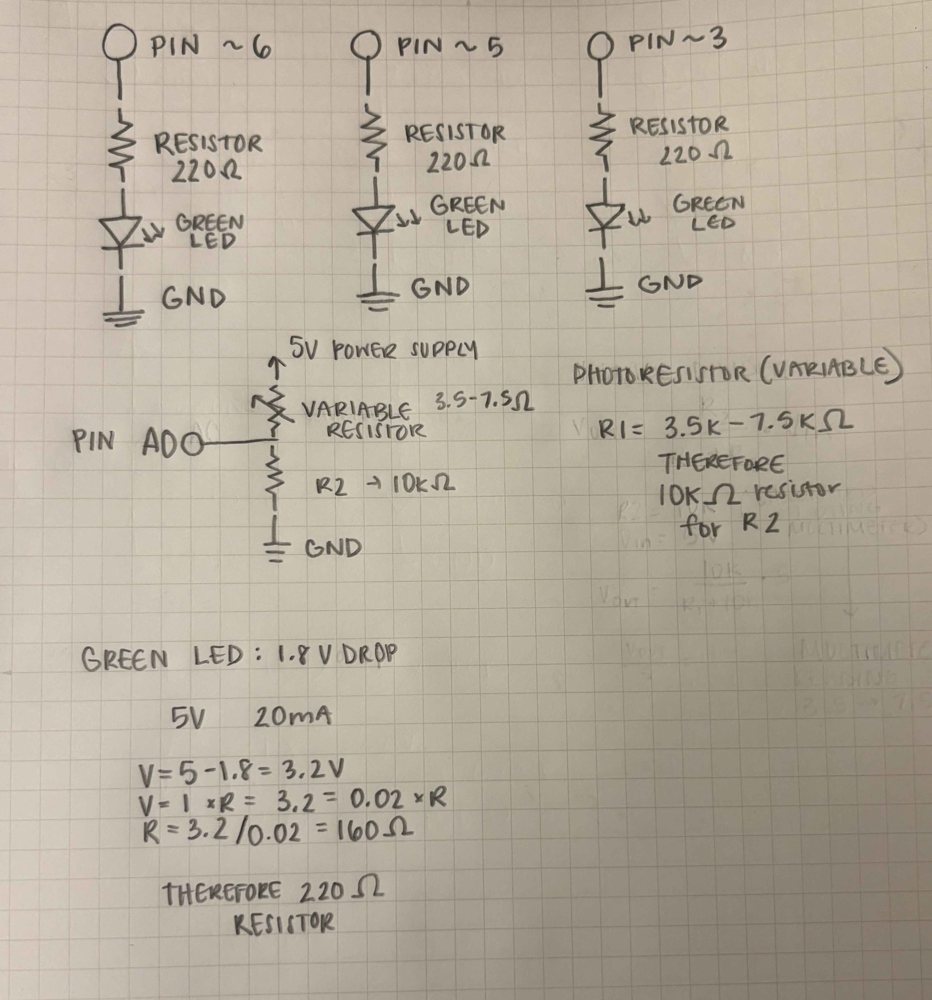
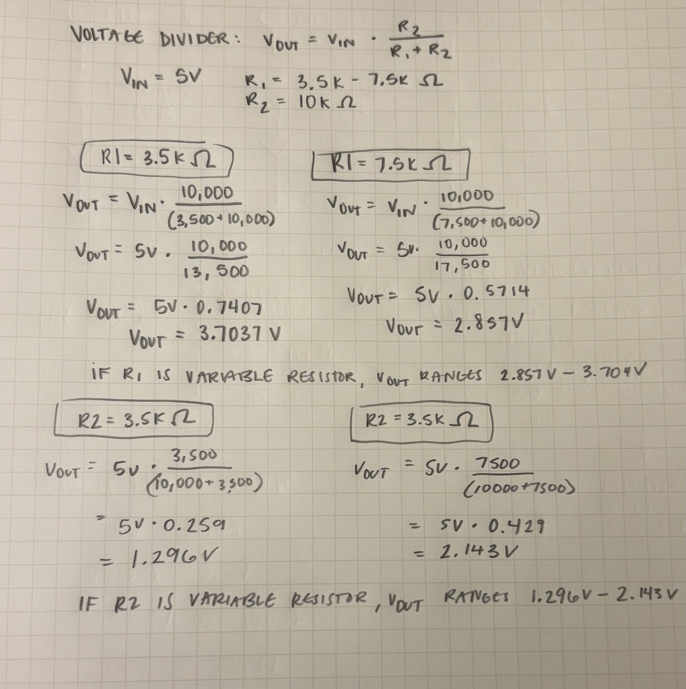
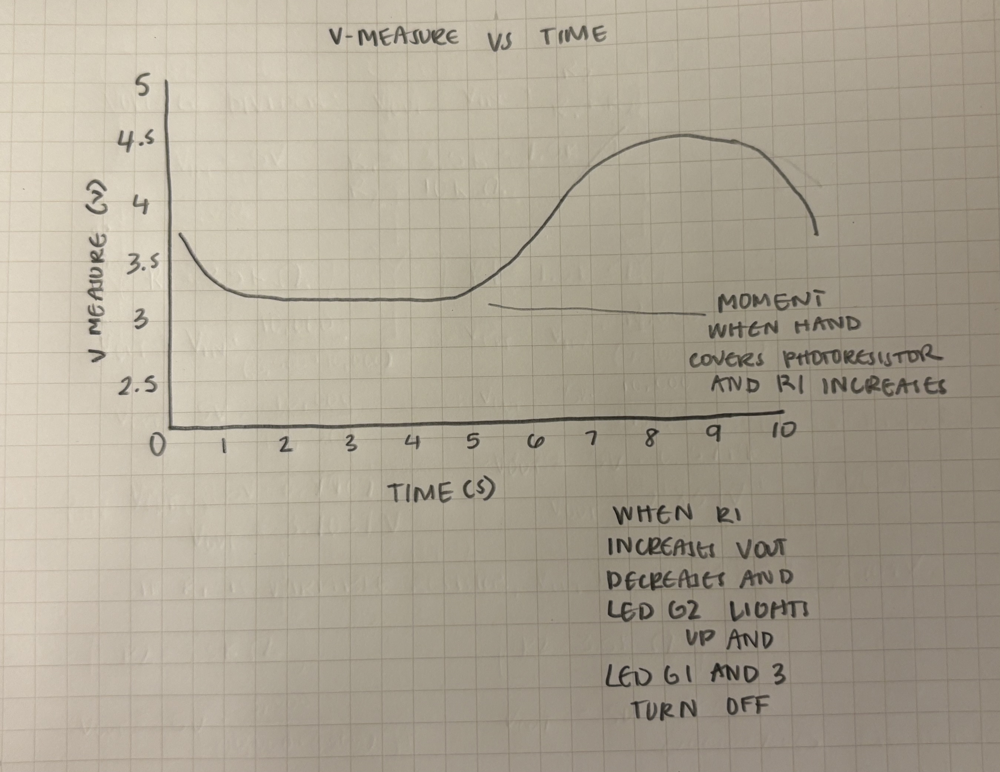

Schematic
Image of my schematic for the circuit & resistance calculation.
'Input Output' Circuit Documentation

This is my 'Input Output' circuit. The breadboard is connected to the Arduino with:
- Green wire (LED 1) → pin ~6
- Green wire (LED 2) → pin ~5
- Green wire (LED 3) → pin ~3
- Black wire → GND
- White wire → A0
- Red wire → 5v
Code
/*
Input Output
This example reads a photoresistor and lights up to three LEDs
with brightness corresponding to the sensor reading.
const int analogInPin = A0; // analog input pin connected to the photoresistor
const int ledG1 = 6; // green LED 1 connected to digital pin 6
const int ledG2 = 5; // green LED 2 connected to digital pin 5
const int ledG3 = 3; // green LED 3 connected to digital pin 3
int sensorValue = 0; // variable storing raw sensor reading 0-1023 range
int mappedValue = 0; // variable storing sensor value mapped to 0-255 range
int sensorMin = 1023; // minimun sensor value
int sensorMax = 0; // maximum sensor value
*/
void setup() {
// 3 green LED pins set as outputs
pinMode (ledG1, OUTPUT);
pinMode (ledG2, OUTPUT);
pinMode (ledG3, OUTPUT);
Serial.begin(9600); // sets data rate in bits per second for serial data transmission
}
void loop() {
// read analog sensor value from photoresistor
sensorValue = analogRead(analogInPin);
// update min sensor value if reading lower
if(sensorValue < sensorMin){
sensorMin = sensorValue;
}
// update max sensor value if reading higher
if (sensorValue > sensorMax){
sensorMax = sensorValue;
}
// map sensor value from sensor value min and max to 0-255 range for PWM output
if (sensorMax == sensorMin){
mappedValue = 0;
} else {
mappedValue = map(sensorValue, sensorMin, sensorMax, 0, 255); //
}
// prints the sesnor value in the serial monitor
Serial.print("Sensor Value: ");
Serial.print(sensorValue);
// prints the mapped value in the serial monitor
Serial.print("\t Mapped Value: ");
Serial.println(mappedValue);
// prints the minimum sensor value in the serial monitor
Serial.print("\t Min: ");
Serial.println(sensorMin);
// prints the maximum sensor value in the serial monitor
Serial.print("\t Max: ");
Serial.println(sensorMax);
// turn ledG1 off if the sensor value is less than sensor value 500 (determined by testing values and seeing what caused the leds to become bright)
if(sensorValue < 500){
analogWrite(ledG1, 0); // set brightness to 0
} else {
analogWrite(ledG1, mappedValue); // set brightness based on mapped value
}
// turn ledG3 off if the sensor value is less than sensor value 500
if(sensorValue < 500){
analogWrite(ledG3, 0); // set brightness to 0
} else {
analogWrite(ledG3, mappedValue); // set brightness based on mapped value
}
// turn ledG2 off if the sensor value is greater than the sensor value 500
if(sensorValue > 500){
analogWrite(ledG2, 0); // turns led off
} else {
analogWrite(ledG2, mappedValue); // turns led on with brightness
}
delay(200); // delays for 200 milliseconds
}
Operation Video
Video of my circuit in action.
Video of my serial monitor. When photoresistor is covered, mapped value decreases.
Questions
Question 1
The variable resistor can be either R1 or R2 in my schematic. The only difference is that depending on which resistor is used, it will effect how to Vout chnages when the photoresitor is covered or not covered. If R1 is the variable resistor, Vout ranges from 2.857V to 3.704V. If R2 is the variable resistor, Vout ranges from 1.296V to 2.143V. This means that depending on which resistor is used as the variable resistor, the voltage output will either increase or decrease when the photoresistor is covered.

Question 2
This is my v-measure x time graph for my photoresistor circuit.
Question 3
If I had a 10-bit PWM and 16-bit analog-to-digital convertor instead of 8-bit and 10-bit, it would mean the values range from 0-65535 instead of 0-1023. This means the sensor value range is much larger aswell as the mapped range. this means readings could be more precise, and the LED brightness would have smoother transitions between brightness levels when the photoresistor is covered or uncovered.
Question 4
I used Microsoft CoPilot to help me debug my code when my ledG2 was not turning off when the sensor value was high. I explained to CoPilot that I was using if(sensorValue < 500) for my G2 and it helped me realize that I needed to use if(sensorValue > 500) instead to get the desired effect. This is because I wanted the ledG2 to turn off when the sensor value was high, meaning there was more light detected by the photoresistor. CoPilot was able to break down what the sensor values meant in relation to my photoresistor being covered or not. I also had trouble determining how to fidn the threshold for when my sensor value would tunr leds on and off, and when I asked CoPilot how to determine it, it suggested using an equation or to physiclly test different values until I found one that worked. I ended up testing different values and found that 500 was a good threshold for my circuit. Overall, CoPilot was helpful in guiding me through debugging my code and understanding how to work with sensor values. It provides clear explanations and helped me to better comprehend the realtion between what my sensor values were reading and how that would effect the physical interaction of the LEDS.